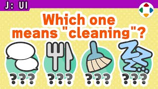
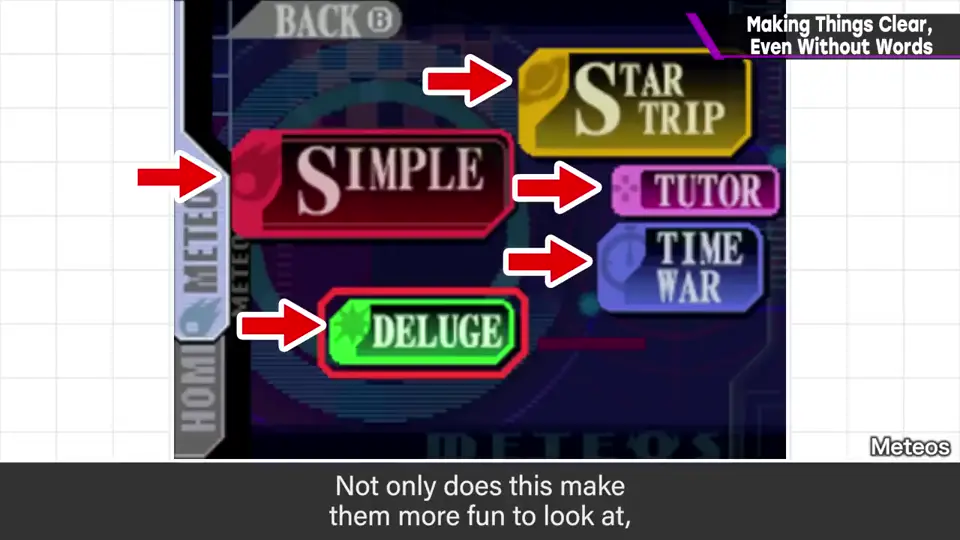
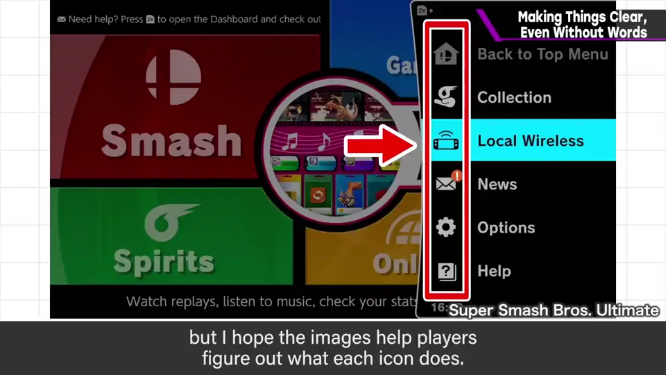
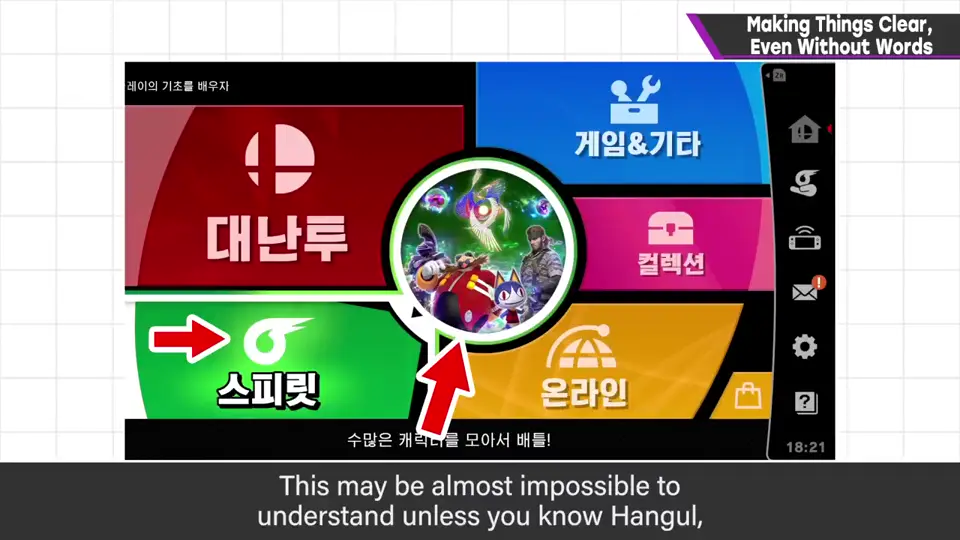
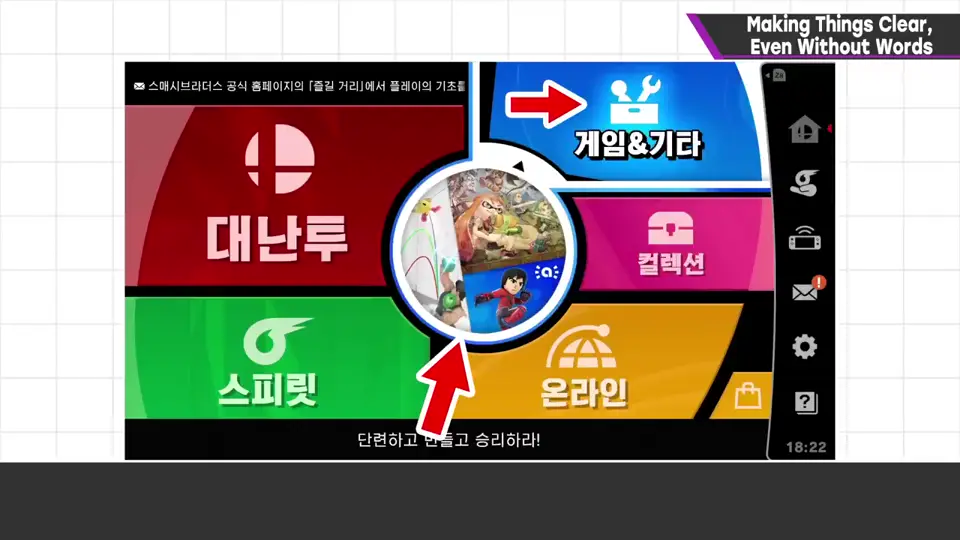
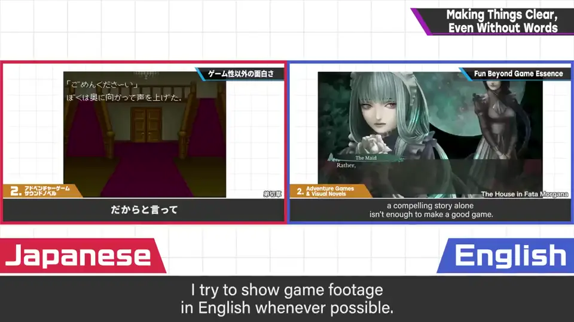
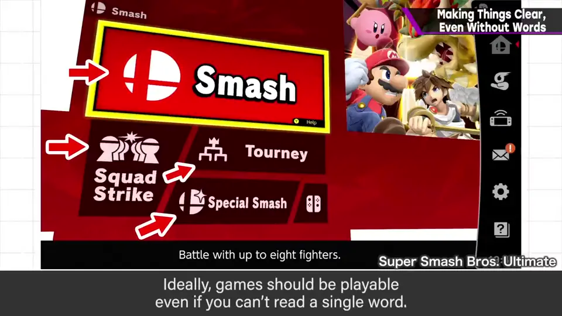
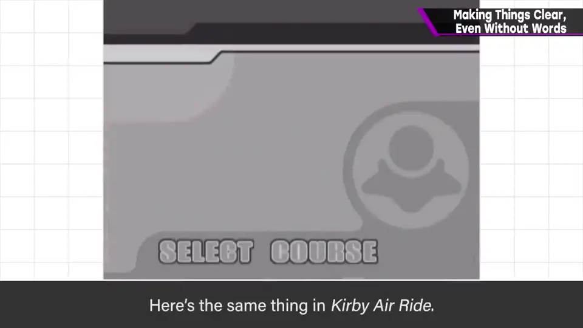
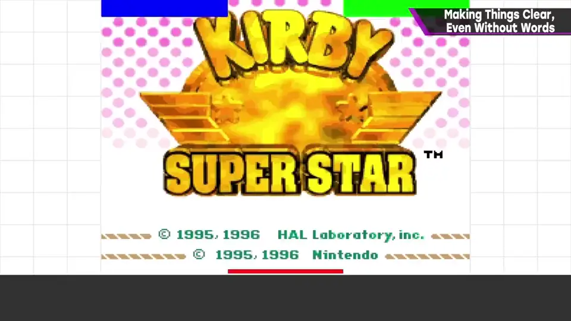
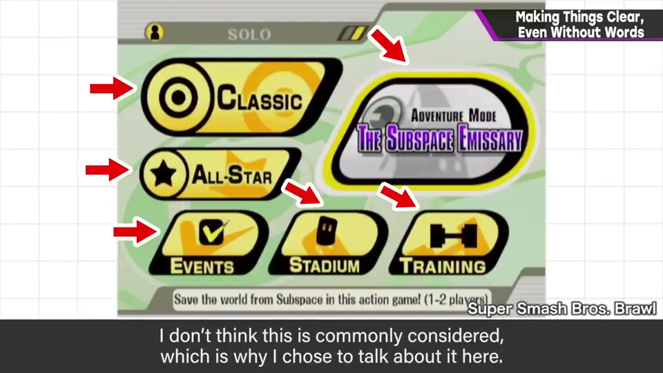

速览
当然有极限，但樱井的游戏会尽量做到即使不懂语言也能玩。例如在可能范围内，图标里放入画面或角色：单纯看着开心之外，看图就能知道能做什么。试着把《特别版》切成韩语：不懂韩文几乎举手投降，但有图就似乎能大致理解。这个频道里，能用英文设置的地方也尽量用英文展示（做不到的也常有，抱歉）——日本人读英文多少能理解，但英语母语者读日语非常困难。另外，他会让连按确认键就进入基本的主游戏：《特别版》从标题连按会一路到大乱斗的斗士选择；《卡比赛车》能从第一个赛道开始赛车；《星之卡比 超级豪华版》会从带教学的第一个剧本开始。这看起来像正常设计就自然如此，但其实是有意为之。最坏情况下就算读不懂字也能玩，是理想状态；这点不太被注意，所以拿出来讲。
1. 尽量不靠语言 0:04
当然有极限，但樱井的游戏会尽量让人即使不懂语言也能玩。


在可能的范围内把画面或角色放进图标里：看着开心之外，看图就知道能做什么。
2. 换成韩语试试 0:30
试着把语言切成韩语：不懂韩文几乎举手投降，但因为有图，似乎能大致明白。


3. 频道里的英文画面 0:45
这个频道中，能用英文设置的画面都尽量用英文展示（做不到的地方也常有，抱歉）。

日本人读英文多少能猜出意思，但英语母语者读日语非常困难——他理解这一点。
4. 连按确认键直达主游戏 1:11
另外，他设计成连按按钮就能进入基本的主游戏：
- 《大乱斗 特别版》：从标题画面连按，会一路进入「大乱斗」的斗士选择。


- 《卡比赛车（Kirby Air Ride）》：可以从第一个赛道开始赛车。
- 《星之卡比 超级豪华版》：第一个剧本会带教学开始。


这看起来像是正常设计就会自然如此，但其实是有意这样做的。
5. 理想：不识字也能玩 2:01
最坏的情况，即使读不懂文字也能玩，这是理想。因为这点不太被意识到，所以拿来做话题。
flowchart TD
A[不懂语言也能玩] --> B[图标放入画面/角色]
A --> C[频道用英文画面]
A --> D[连按确认 → 主游戏]
D --> E[特别版: 大乱斗选人]
D --> F[卡比赛车: 第一赛道]
D --> G[超级豪华版: 带教学第一剧本]
自测题
1. 图标里放入画面/角色有什么作用？
看起来开心，并且看图就能知道能做什么，不懂语言也能理解。 0:23
2. 为什么频道尽量使用英文画面？
日本人读英文还能大概理解，英语母语者读日语却非常困难。 0:50
3. 「连按确认键」设计的目的是什么？举一个例子。
让人不读文字也能进入基本主游戏；如《特别版》连按会到大乱斗的斗士选择。 1:20